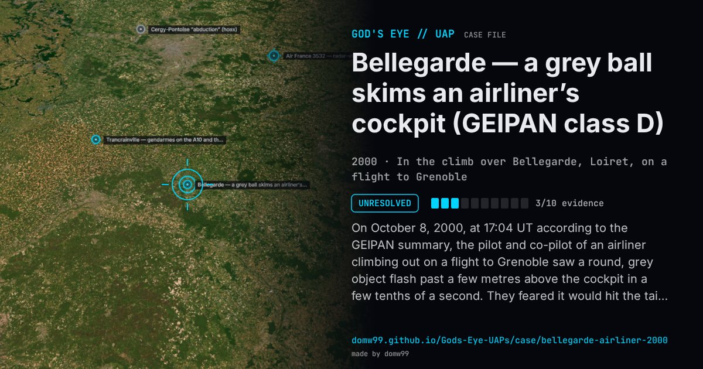

Bellegarde — a grey ball skims an airliner’s cockpit (GEIPAN class D)

On October 8, 2000, at 17:04 UT according to the GEIPAN summary, the pilot and co-pilot of an airliner climbing out on a flight to Grenoble saw a round, grey object flash past a few metres above the cockpit in a few tenths of a second. They feared it would hit the tail. The crew reported it; no balloon release could be matched to it, a large bird was considered, and the case stayed unexplained.
Explanation
GEIPAN classes it D. No balloon could be traced, and a large bird such as a goose was considered; the inquiry could not identify the object, and GEIPAN notes that it put the safety of the flight at risk.
What was seen
Shape: A large, round, grey ball
Witnesses: The captain and first officer of an airliner bound for Grenoble
Duration: A few tenths of a second
Sources
Browse
- France
- 2000s
- Unresolved
- Aviation encounters
- Official government documents
- Pilot and aircrew witnesses
- Spheres and orbs